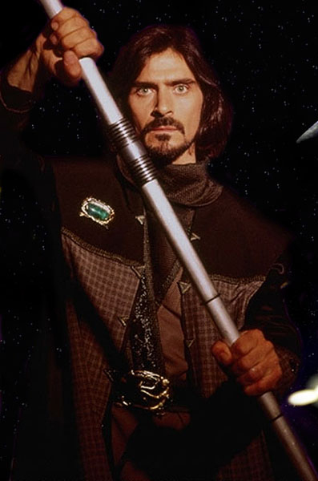
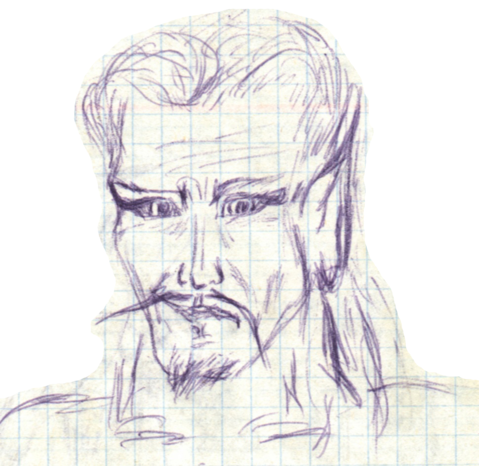

Квашнин Владислав Павлович
Квашнин Владислав Павлович
Дата рождения:
23.12.1981. Это был один из тех редких моментов, когда я был предельно пунктуален.
Дата смерти, диагноз/причина:
24.02.2004. Что, не верите? Зря. Даже мёртвый Влад смог сделать альбом и диплом. Ну и что, что зомби… Будет воля Божья - воскресну. ;-)
Откуда родом / где пенаты:
А родился я на севере Омской области, в Тевризском роддоме, до 4х лет жил в деревне Петелино, потом перебрался на земли вечной мерзлоты (Лабытнанги) и в 6 лет обосновался в Омске. Тогда я и узнал, что на самом деле меня зовут Владик! Вот бред!!!
Адреса для связи (mail, адрес родителей и прочие контактные адреса и телефоны):
Маму пока можно найти здеся: ул. 40 Лет Ракетных войск Стратегического Назначения 1- 14 (т. 600-314). Ну а я прописан по адресу: feelsmind@mail.ru .
Любимый кусочек любимой песни. А так же любимый и не любимый цвета:
Почти все пять лет учёбы мою душу терзала песня Бутусова "Я хочу быть с тобой". Я находил в ней новые смыслы, и эти слова не покидали меня. "Я пытался уйти от любви, Я брал острую бритву и правил себя, Я укрылся в подвале, я резал Кожаные ремни, стянувшие слабую грудь…". Любимый цвет: зелёный. Нелюбимый... не помню такого.
Научный интерес / тема диплома, ФИО научного руководителя:
Диплом: "Генералитет русской армии и падение монархии в России". Научный интерес: образно-представленческая система сознания комботантов ("воинов"). Научный руководитель: Владимир Леонидович Кожевин.
Понимание смысла жизни (зачем топчет эту землю):
Смысла жизни нет по определению, т.к. мы можем вложить смысл лишь в то, что делаем осознанно. А живём мы, потому что не умеем по-другому (вроде того, что ходим, потому что не умеем летать). Смерть - это итог, а не альтернатива. А от жизни я хочу максимум удовольствия, которое бывает разным. В общем, главное не сколько живёшь, а как.
Отношение к аборту (это убийство?), смертной казни и эвтаназии:
И зачем я сюда эти вопросы засунул? Наверно, потому что в экспеде про аборт спорили. Ладно, аборт - это убийство. Но я приемлю убийство ради счастья женщины. Убийство - это лишение жизни, а жизнь сама по себе ничего не значит. Убийство, конечно плохо, но не от того, что человека больше нет, а от того, что страдают близкие! Хотя, сам я даже мух стараюсь выпускать в форточку, а если убиваю, то в лепёшку - чтобы не страдали :) То же касается эвтаназии - если жить в тягость (по-настоящему), то человек имеет право на смерть. Плюс, пациенты, находящиеся в "растительном" состоянии, в конце концов, не нужны даже родственникам. И они уже не живут, они существуют. В этом случае эвтаназия даже не убийство. Ну а смертная казнь… вы спросите у пожизненно заключённых. Они мечтают о смерти. Зачем же лишать общество осознания того, что преступник страдает. Плюс, как мера устрашения смертная казнь не устрашает. Каждый считает, что его не поймают. Вообще, надо не наказывать, а "перевоспитывать". Какой смысл в наказании - чувство собственного удовлетворения? Своеобразная метаморфоза мести?
Понимание большой и чистой любви (совокупляющуюся пару мытых слонов не предлагать):
Нет больше и чище неразделённой любви. А это грустно :-( Но даже такая лучше каменного сердца.
Брак - это продолжение любви или насилие над ней?
Брак - это, в идеале, СИМВОЛ желания разделить с любимым человеком "горе и радость". Почему люди считают, что их любовь, "подтверждённая" оттиском печати, не нуждается в поддержке и постоянном обновлении?
Сколько хочет детей (лично проверю выполнение этого желания :)
Ох, дети цветы жизни - дарите женщинам цветы ;-)) Детишек я люблю, они отличают добро от зла. Они милые и наивные. От любимой женщины хочу много детей, но боюсь, больше трёх не выдержит моё индустриальное сознание. Дело за малым - за любимой женщиной. ;) ЛЮДИ!!! Любите своих детей! Помните, что вы не опекуны, обязанные накормить и выучить ребёнка, а самые близкие люди для своего дитя. Частенько вижу, как молодая мамаша ОРЁТ на своего ребёнка, едва научившегося говорить. Ужас! Будьте терпеливыми и не стесняйтесь демонстрировать детишкам свою любовь.
Впечатления об учёбе / последних пяти годах жизни:
Всё, что было до Универа, кажется очень далёким. Когда-то и эти годы померкнут, я никогда не жил прошлым. Но время было интересное!!! Активные годы. Вряд ли такое повторится. Но настоящая жизнь начинается только сейчас.
Впечатление от курса:
Вот делал альбом и понял: я всех вас люблю, вот прямо всех-всех-всех без исключения!!!!! Некоторые говорят, что курс не очень дружный, многие не знают некоторых даже по имени (это факт). Но как такая большая группа мыслящих людей может быть безусловно сплочённой? Главное, что курс стал довольно мирным. Даже массовое неприятие отдельных личностей не переливается в открытый конфликт. В общем, вы мне все дороги…
Самые запомнившиеся моменты жизни, проведённые с сокурсниками:
Я, конечно, до безумия не напивался, но и мне есть что вспомнить. Самые врезавшие в память моменты, правда, оглашению не подлежат... С удовольствием вспоминаю экспеду на первом курсе (моя единственная): как мы ругались и мирились. Как я ходил в деревню самогон покупать. Сам-то я тогда был идейным трезвенником, но легко научился отличать по запаху очищенный от неочищенного. Ещё из экспеды помню выражение побледневшего лица Саши Николаева от того, что он воспринял бледно-зеленый цвет лица старшекурсницы за галлюцинацию в результате… не будем об этом. Главное то, с каким облегчением Саша вздохнул, когда ему объяснили, что это питательная крем-маска. Помню, в какой ужас я приводил своим поведением наших товарищей. Только Наташа Силаева меня понимала и отстаивала в разговорах у меня за спиной мою позицию. По крайней мере, такими агентурными данными я владею ;)) Меня всегда забавляли конфликты, жаль, что иногда только меня. Ещё помню длинные дороги в Универ вместе с Лёшей Шаблаковым. Помню, как однажды в маршрутке я почувствовал, что меня охватило состояние полного блаженства. Когда я стал рефлексировать, понял, что причиной волн счастья, захлёстывающих меня, является аромат духов соседки (тогда я и понял смысл ароматерапии). Пока я думал о том, как узнать марку духов и не получить по морде от кавалера этой девушки, сидящего напротив, девушка вышла. Жаль. Никогда этого не забуду. Помню, как Миша Шаповалов вводил меня в курс дела реалий внутрироссийской политики (на первом курсе). Как забыть Баклина с его фразой "я засунул руки под парту и выразил своё недовольство". Помню, как на втором курсе у меня на квартире ночью собрались Шаблаков, Сабаев, Мирюк и Худяков (кажется всё) и отмечали чьи-то полученные права. Здорово мы тогда из вареников сделали кашу. :) А сколько разговоров было… разных. Много чего помню, связанного с Полиной. Помню, как однажды напоил Полину своим фирменным липовым чаем, на который у Полины оказалась страшнейшая аллергия, от чего её тошнило с утра на лекции. А все подумали невесть что и потом приставали с расспросами к Наташе Силаевой, уводившей Полину в сакральное место под вывеской "Ж". Ещё как-то на семинаре Черепанова Полина сказала, что мы с ней обсуждали дома вопрос семинара. Как все смеялись, Черепанов даже сказал: "Интересная тема для разговора". А что тут такого, неужели нас с Полиной должны были связывать только любовные утехи? Помню, как на 23 февраля на втором курсе мне подарили презервативы и открытку с текстом: "Староста Владик, ты у нас самый сексуальный и активный. Но учти: мы пополненья в группе НЕ ХОТИМ, и если надо, даже усмирим!!!" Ах, девочки, как это мило с вашей стороны :) А ещё очень весёлым было 7 марта на втором курсе (смотри фото Требтау / Никифоровой Е. / Силаевой). Помню, как расформировали МОЮ группу! Как я тогда атаковал деканат с требованием распределить людей по остальным группам, исходя из их интересов. Получилось!! Большего я не мог сделать для любимой группы И-93 (всё равно я считаю, что она была самой душевной на курсе). А на третьем курсе мы (мальчики) сели в лужу - подарили по одной "неупакованной" розочке не самого изящного вида. А идея-то нам казалась хорошей. Помню, как с Васей Шишкиным отдыхали в санатории в 2002 году. Это неописуемо!!! Ах, как Вася танцевал стриптиз на пару со Славиком. :))) Помню, как на третьем курсе Лёше Бокатову вернули потерянные им 500 рублей. Он даже не поблагодарил. Я сначала удивился, но потом решил, что это оттого, что для Лёши это естественно (в смысле вернуть чужое). То же самое сказал Миша Шаповалов, видевший происходящее.
Любимый "прикол" во время обучения:
Ну, только если самый любимый, уговорили: когда я брался за создание альбома курса, я думал, что это займёт у меня 2 недели, а на самом деле оказалось….. Правда, смешно?
Любимая вредная привычка:
Убивать полезное время игрой в компьютерные игры. Люди! Я игроголик!!!! Но я не сдаюсь!! Победа будет за мной. Я пошёл на радикальные меры - УДАЛИЛ ЛЮБИМЫЕ ИГРУШКИ!!!!!!! Знаете, помогло. Вот уже две недели плодотворно работаю над альбом (с перерывом на обед и сон), и даже почти не тянет играть!!! Оцените: на удаление игрушек меня подтолкнул "альбом", а не "диплом"!
И есть ПО-НАСТОЯЩЕМУ вредная привычка - издеваться над узостью мышления и устойчивостью стереотипов других людей при наличии массы собственных непреодолённых комплексов! Может, помните, как я на первом курсе в начале пары в уголке доски писал SATAN и DIABOLOS. Я вовсе не сатанист, просто меня радовало то, как это пугало любимых сокурсников. Наверное, было что-то ещё, но помню только последнее - анкету к альбому. (Далее идёт сплошное брюзжание, лучше этого не читать! В общем, я вас предупредил). Вы думаете, мне было интересно мнение большинства об анальном сексе? Да я и так знал, именно поэтому и включил этот вопрос в анкету. Меня очень удивляет всеобщий страх перед "интимными" вопросами. Ведь в вопросах главным было ваше МНЕНИЕ об ЭТОМ, а не сколько раз вы ЭТИМ занимались!!! Значит ли это, что люди боятся высказать своё мнение? Или боятся даже думать об этом? Я не призываю к разговорам на подобные темы также свободно, как о погоде. Я просто прошу принять нашу жизнь ЦЕЛИКОМ. Ну, объясните мне, что постыдного в том, чтобы прийти в аптеку и купить ТОЛЬКО презервативы. Зачем называть ещё пару ненужных лекарств? Чтобы доказать окружающим, что ты только ради такого пустяка, как презервативы, в аптеку бы не попёрся? Или ещё один пример, свидетелем которого являлся, наверное, каждый: мужчина протягивает в окошечко киоска записочку и получает упаковку гигиенических прокладок, которую с дрожью в руках немедленно прячет в заранее открытый пакет. Плюс, долго оправдывается перед очередью, что это не ему! Неужели так сложно сказать: "Пожалуйста, упаковочку "Олвэйс Ультра", три (четыре и т.д.) капельки. Спасибо". Объясните мне, чего крамольного в этой фразе??? А, да, о чём это я? :) Аааа, о том, что я не собирался включать вопросы о разновидностях секса в альбом. Но так как довольно много наших товарищей ответили на эти вопросы, чего я не ожидал, то я не смог исключить их ответы. К тому же, к моей радости, некоторые сумели забавно отшутиться (в отличие от меня). Аааа, нет, я не это хотел сказать. Я хотел раскаяться в своём злодействе! Ведь издеваться - это не хорошо. Каюсь. Надеюсь, я смогу преодолеть это (брызганье слюной при виде людей, боящихся самих себя). Зато я не злой, не корыстный, не злопамятный и понимающий, что людей без недостатков не бывает. (А ещё, я безгранично скромный ;)))).
Любимое ругательство (у кого ИХ нет - депортируем как врага народа):
Киргуду!! Ёперный теянтер!!! Reboot твою "мать"!!! И др. Банальщиной не ругаюсь.
Как воспринимает себя:
Себя воспринимаю как эгоцентричного альтруиста. Как и все люди, соткан из противоречий. Две основы моего характера, на мой взгляд, выражаются этими двумя рисунками (так сказать, инь и янь):


Если из рисунков не совсем понятно, но НА САМОМ ДЕЛЕ интересно -
жми сюда!
О чём жалеет, чего не сделал(а) за эти пять лет:
Нет такого. Всё что я хотел - я сделал или попытался сделать.
О чём жалеет, что сделал(а) за эти пять лет:
Да и здесь считаю что то, что я делал тогда, сделал бы в то время ещё раз. Другой вопрос - что из этого вышло. Такое бывает, хочешь как лучше, а получается - как всегда. Один раз я с умыслом (в лицо) оскорбил сокурсника, почему-то решил, что мне можно. Всё от моего самомнения. Сейчас бы я поступил по-другому. И вообще, я умудрился принести дорогим мне людям столько боли, что эта боль будет всегда следовать за мной тенью. Простите меня...
Главная слабость (перед чем не может устоять):
Не могу устоять перед искренней девичьей улыбкой - просто таю.
Планы (не больше трёх страниц :)
Пойду на коммерческое в аспирантуру. Просто у меня аллергия на кирзу ;))))) И буду жить, чтобы не было жаль. С планами у меня вообще тяжело. Вот в школьном сочинении о своём будущем я до ужаса не хотел писать о том, какие у меня замечательные будут дом, жена, дети, машина, работа. Я просто написал, что после войны (естественно России и США) я далёк от счастливой жизни. Вот таким я был вредным. :)
Описание некоторых сокурсников:
Очень хотел описать многих, но так занят альбомом, что сил нет… Может во втором издании альбома? (будем надеяться, что это случится раньше моего пенсионного возраста :)
Пожелания сокурсникам:
Товарищи! Не думайте много - это вредно. Измеряйте успех своей жизни не деньгами, а тем добром, которое вы несёте. Злой и жадный счастливым не бывает. И не жалейте себя, жалость к себе - удел слабаков. Удачи!